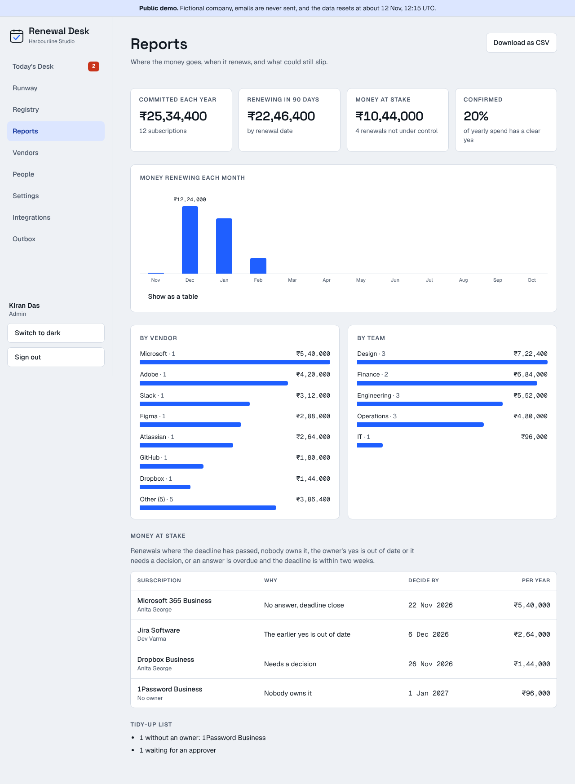

Every subscription has a person
Make it clear who needs to confirm the requirement and who is responsible for the next step.
Independent product · Lifecycle management
Renewal Desk gives teams a clear way to confirm what they still need, follow up with the right people, and make a decision before the last day to cancel or change a subscription.
The problem
Most renewal lists are good at recording dates. The harder part is getting the right person to confirm whether a service is still needed, then leaving enough time to act on that answer.
Without a clear owner and a visible decision deadline, teams can drift towards an automatic renewal simply because nobody responded in time.
Make it clear who needs to confirm the requirement and who is responsible for the next step.
An unanswered request stays visible. Silence should not quietly become a renewal decision.
Track the last day to cancel or change terms, not only the date the invoice renews.
The operating model
Renewal Desk is designed to move a subscription from “coming up” to a deliberate, recorded decision.
Ask the owner whether the subscription is still needed, with the relevant dates and context.
Keep unanswered requests in view and prompt for a response instead of letting them disappear.
Capture whether to renew, cancel, replace or change the subscription, with a traceable history.
Keep the final cancellation or change date visible so the team has time to act.
A look inside
Selected interface captures from the working product. The examples use fictional sample information.



Illustrative captures from 12 November 2026. Names, dates and financial figures shown are fictional Harbourline Studio demo data, not customer records.
Product capabilities
The product brings the people, dates and decisions around a renewal into one place.
Keep subscriptions, vendors, ownership, costs and key dates together.
Collect a clear answer from the person responsible for the service.
Make notice periods and cancellation dates part of the renewal workflow.
See owner prompts, decisions and renewals across a twelve-month horizon.
Review upcoming renewals and financial exposure, with export options.
Keep an explainable record and provide ways to connect renewal activity with other tools.
The runway
The twelve-month view helps teams see what is coming, when an owner needs to be asked and when a decision must be made. It turns a scattered set of dates into a forward plan.
Product build
Renewal Desk is an independent product initiative, developed separately from employer systems and work materials.
I initiated Renewal Desk around a recurring operational problem: teams can record renewal dates, but still struggle to get timely decisions from the people who own the subscriptions.
My work spans product direction, requirements, workflow design, scope and prioritisation, architecture decisions, implementation direction, review and validation. Development is AI-assisted, with hands-on review and testing as the product evolves.
Current status
The application source remains private. A public interactive demo will be linked only after the dedicated demo environment and its safety controls are verified.